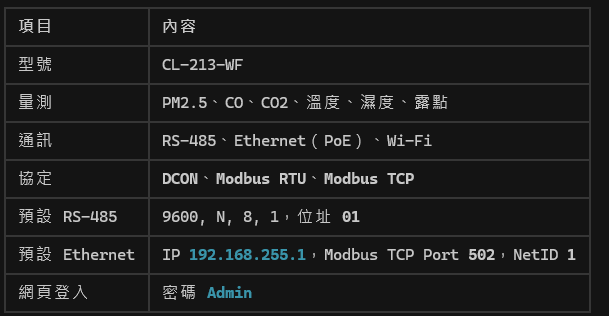
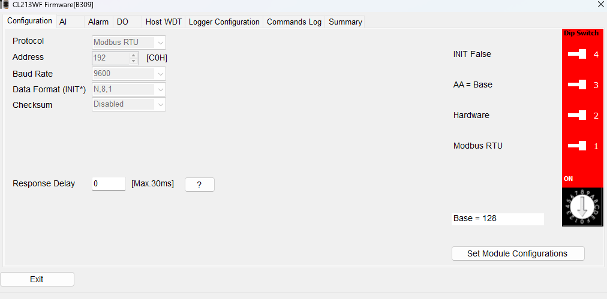
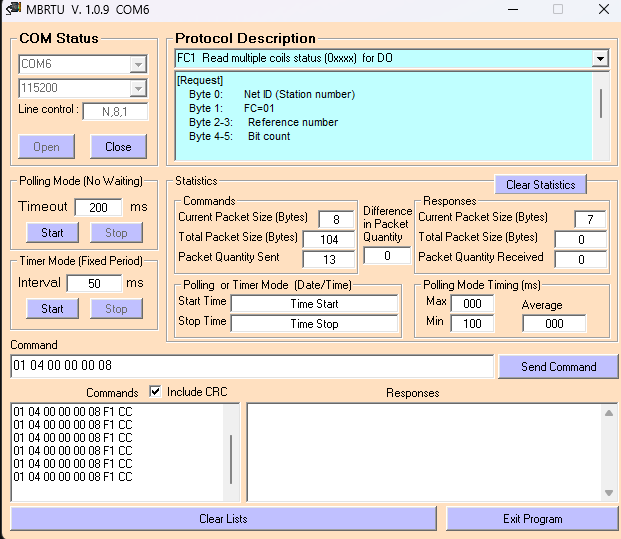
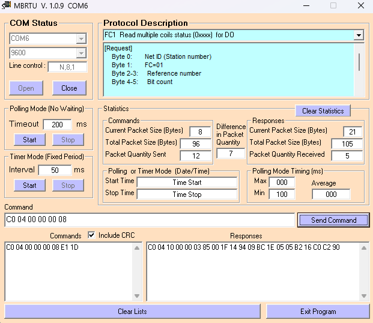
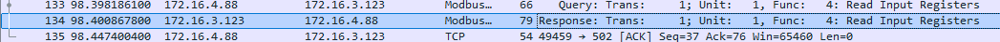
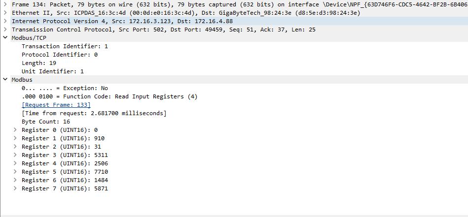
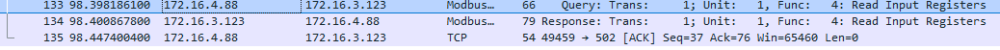
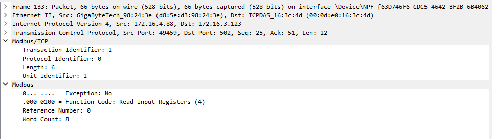

CL-213-WF 空氣感測器
透過 DCON、Modbus RTU 與 Modbus TCP 協定，學習讀取 CO、CO2、PM2.5、溫濕度等空氣品質數據，並以 Wireshark 觀測封包。
學習路線
建議依照以下順序逐步熟悉設備與通訊協定。
-
01
硬體認識與接線
確認 RS-485 與乙太網路接線、供電與指示燈狀態。
-
02
DCON 協定
使用 DCON Utility 快速搜尋模組、確認通訊參數，作為除錯基礎。
-
03
Modbus RTU + MBRTU
透過 RS-485 發送 FC 03/04 指令，讀取感測值與模組資訊。
-
04
Modbus TCP + MBTCP
透過 Ethernet 連線，理解 MBAP Header 與 PDU 結構。
-
05
封包拆解與 Wireshark
觀測實際封包，對照 Request / Response 的十六進位內容。
設備與接線檢查
所需設備
- 硬體：CL-213-WF 空氣感測模組
- 軟體：MBRTU（RS-485）、MBTCP（Ethernet，發送 command 觀察封包）
- 工具：USB-RS485 轉接器、DCON Utility、eSearch
接線檢查清單
PC ── USB-RS485 ── D-/D+ ── CL-213-WF
裝置管理員應出現 COM 埠（例如 COM6）
PC ── 乙太網路 ── CL-213-WF
用 eSearch 搜尋 CL-213-WF 並確認 IP
CL-213-WF ── Vs+ / GND
模組供電正常（指示燈亮）
CL-213-WF 規格摘要
| 型號 | CL-213-WF |
|---|---|
| 量測 | PM2.5、CO、CO2、溫度、濕度、露點 |
| 通訊 | RS-485、Ethernet（PoE）、Wi-Fi |
| 協定 | DCON、Modbus RTU、Modbus TCP |
| 預設 RS-485 | 9600, N, 8, 1，位址 01 |
| 預設 Ethernet | IP 192.168.255.1、Modbus TCP Port 502、NetID 1 |
| 網頁登入 | 密碼 Admin |

DCON 協定
DCON 用於快速開發與除錯，可在切換到 Modbus 之前先確認模組是否正常回應。
打開 DCON Utility 並選到正確的 COM port
搜尋模組 CL213WF
確認參數：9600, N, 8, 1，位址 01

Modbus RTU 練習
連線設定（MBRTU）
| COM Port | 你的 RS-485 埠（如 COM5、COM6） |
|---|---|
| Baudrate | 9600（正確值） |
| Parity | None |
| Data bit | 8 |
| Stop bit | 1 |
| Slave ID | C0（十進位 192，與韌體 Address 一致） |
簡報中曾寫 Baudrate 115200、Unit ID 1，實際測試時這兩項設定錯誤會導致無回應（見下方排查）。
⚠️ MBRTU 無回應？
- 確認是否切換到 Modbus 模式
- 確認 COM port 正確
- 接線有無鬆脫
- Baudrate 正確（應為 9600，不是 115200）
- Slave ID 正確（應為 C0 / 192，不是 01）


讀全部感測值（FC 04）
C0 04 00 00 00 08 [CRC_L] [CRC_H]
C0 04 00 00 00 08 E1 1D
C0 04 10 00 00 03 85 00 1F 14 94 09 BC 1E 05 05 B2 16 C0 C2 90
只讀 CO2（FC 04）
C0 04 00 01 00 01
C0 04 02 03 85 45 B2
將 03 85 轉為十進制 = 901 ppm
讀模組資訊（FC 03）
| Start Address | 40480（或工具顯示的 0-based 位址） |
|---|---|
| Quantity | 6 |
可讀到韌體版本、模組名稱等資訊。以下 Request 為 MBTCP 工具格式（含 MBAP Header，無 CRC）。
00 01 00 00 00 06 01 03 9E 20 00 06
RTU 封包拆解
讀全部感測值 — Request 拆解
C0 04 00 00 00 08
| 位元組 | 說明 |
|---|---|
C0 | Slave ID |
04 | Function Code（讀 Input Registers） |
00 00 | 起始位置 |
00 08 | 數量（8 個 register） |
Response 範例
C0 04 10 00 00 03 85 00 1F 14 94 09 BC 1E 05 05 B2 16 C0 C2 90
| 位元組 | 說明 |
|---|---|
C0 | Slave ID |
04 | FC |
10 | 資料 byte 數（16 bytes） |
00 0003 8500 1F14 9409 BC1E 0505 B216 C0讀模組資訊 — Response 拆解
01 03 0C 00 00 B3 09 D2 13 43 4C 00 C0 00 06
| 位元組 | 說明 |
|---|---|
00 00 B3 09 | 韌體版本（FW 低 / FW 高） |
D2 13 43 4C | 模組 D213 / CL |
00 C0 | 位址（192） |
00 06 | Baud rate（9600） |
Modbus TCP 練習（MBTCP）
瀏覽器登入 CL-213-WF 網頁設定介面
Network 頁記下：IP、Port 502、NetID 1
ping <IP> 確認通訊正常
連上 MBTCP（確認 Connect 按鈕反白 = 已連線）
讀全部感測值（FC 04）
00 01 00 00 00 06 01 04 00 00 00 08
MBAP Header 拆解（7 bytes）
| 位元組 | 欄位 | 說明 |
|---|---|---|
00 01 | Transaction ID | 交易識別碼 |
00 00 | Protocol ID | 固定為 0（Modbus） |
00 06 | Length | 後續 byte 數 |
01 | Unit ID | 從站識別 |
PDU（Protocol Data Unit）
| 位元組 | 欄位 | 說明 |
|---|---|---|
04 | FC | Function Code |
00 00 | 起始位址 | 從 register 0 開始 |
00 08 | 數量 | 讀取 8 個 register |
Response 範例
01 04 10 00 00 03 B2 00 1F 14 B6 09 CC 1E 22 05 CB 16 ED
01 | Unit ID = 1 |
04 | FC 04 |
10 | Byte Count = 16 |
封包觀測（Wireshark）
使用 Wireshark 擷取 Modbus TCP 流量，對照實際封包與 MBTCP 工具發送的指令。




通訊協定參考
以下為學習筆記補充，非簡報原文內容。
RS-232 vs RS-485
| RS-232 | RS-485 | |
|---|---|---|
| 設計目的 | 兩台設備點對點短距離連線 | 多台設備長距離匯流排連線 |
| 常見場景 | 電腦接單一設備、調試 | 工廠現場多台感測器 / IO 模組共用一條線 |
| 你的設備 | PC 若只有 COM 埠，多半是 RS-232 | M-7045D、CL-213-WF 的通訊埠 |
TCP vs UDP
TCP
- 連線導向，確保資料完整送達
- 有重傳機制，適合重要資料
- Modbus TCP 使用 TCP（Port 502）
UDP
- 無連線，速度快但不保證送達
- 適合即時串流、廣播
- 常用於影音、DNS 查詢等場景